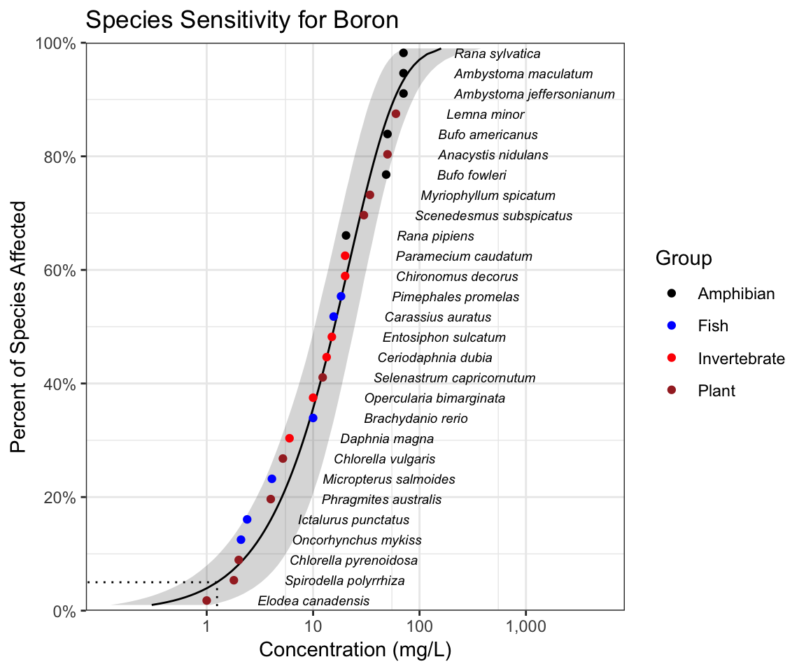
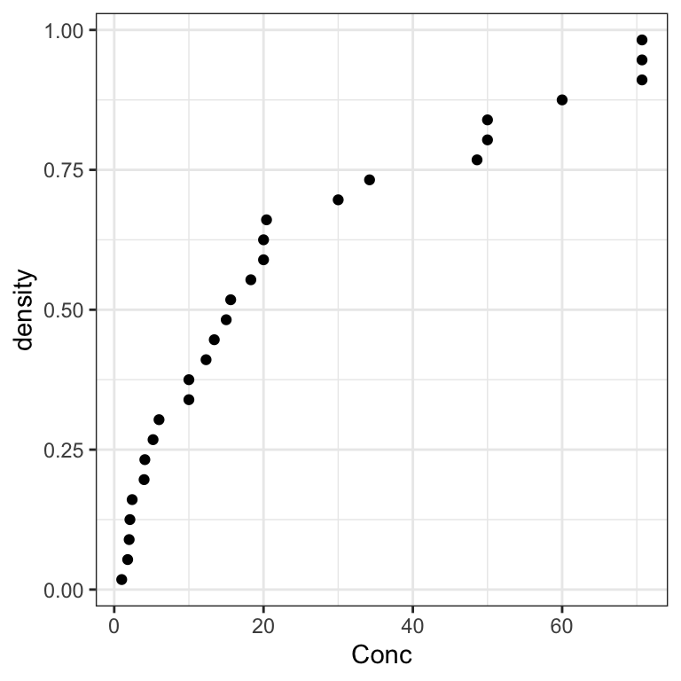
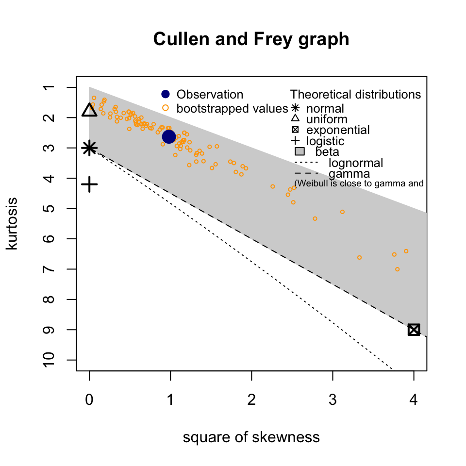
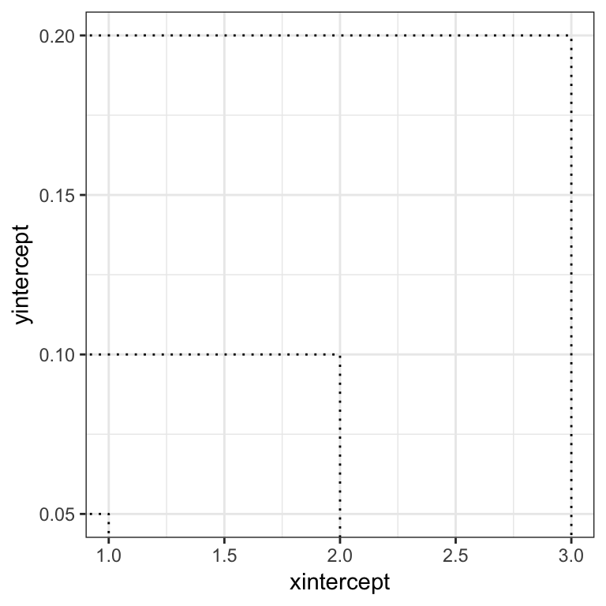
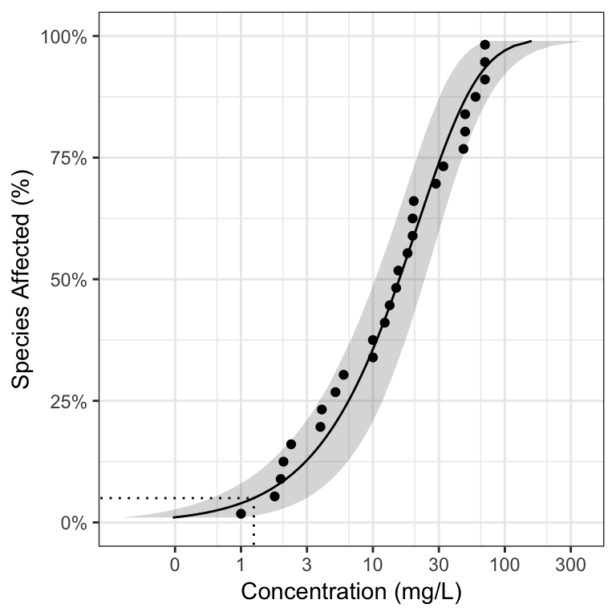
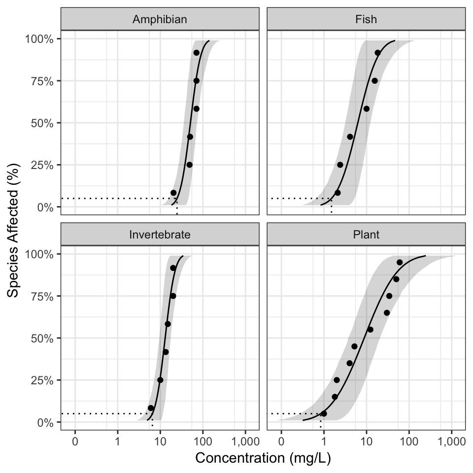
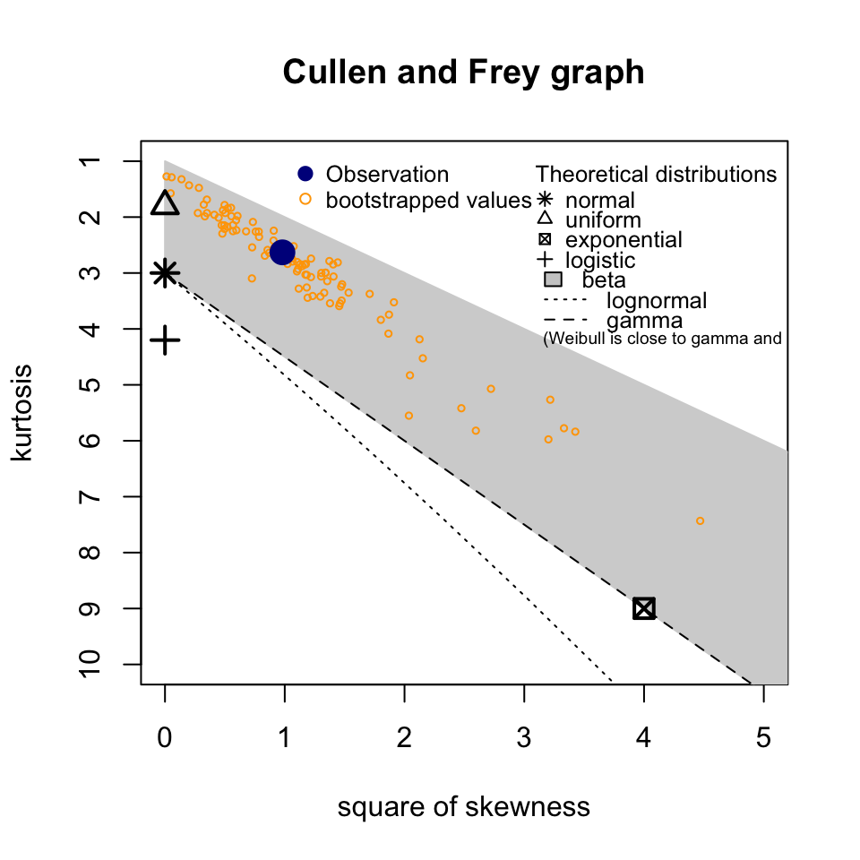
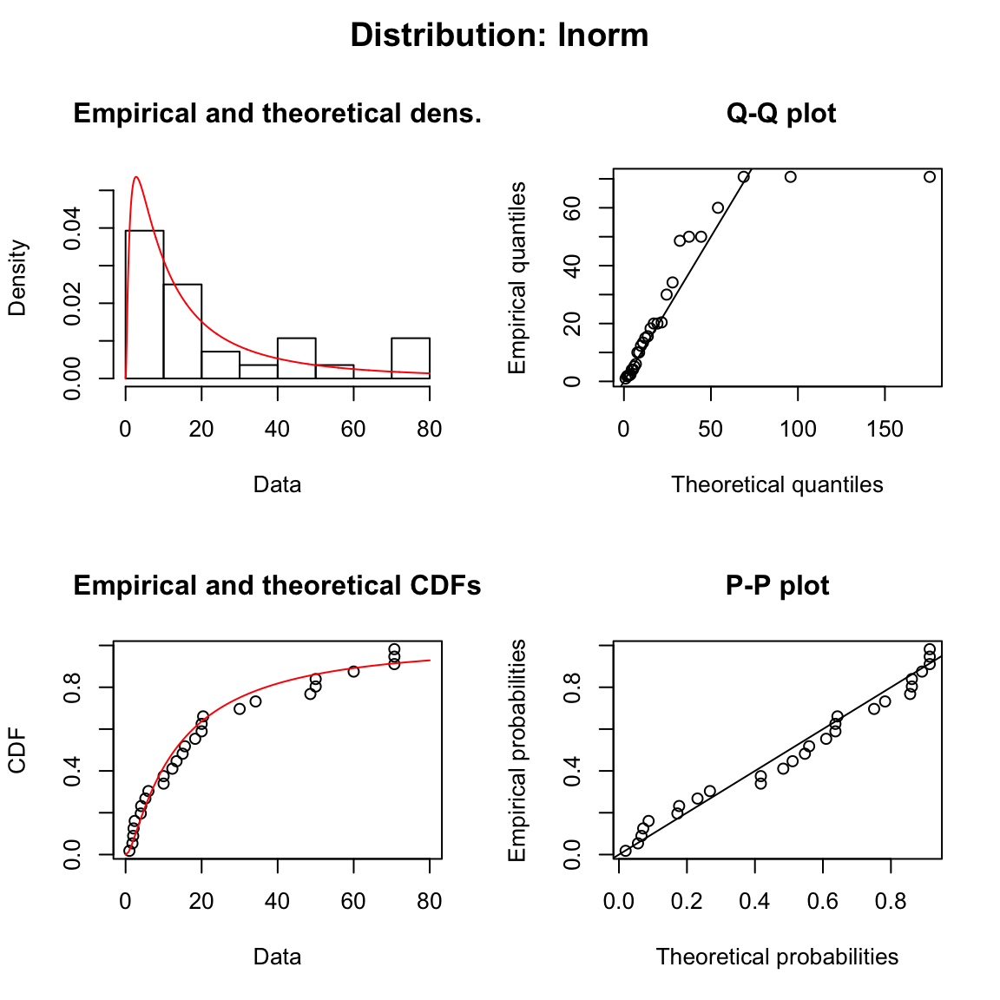
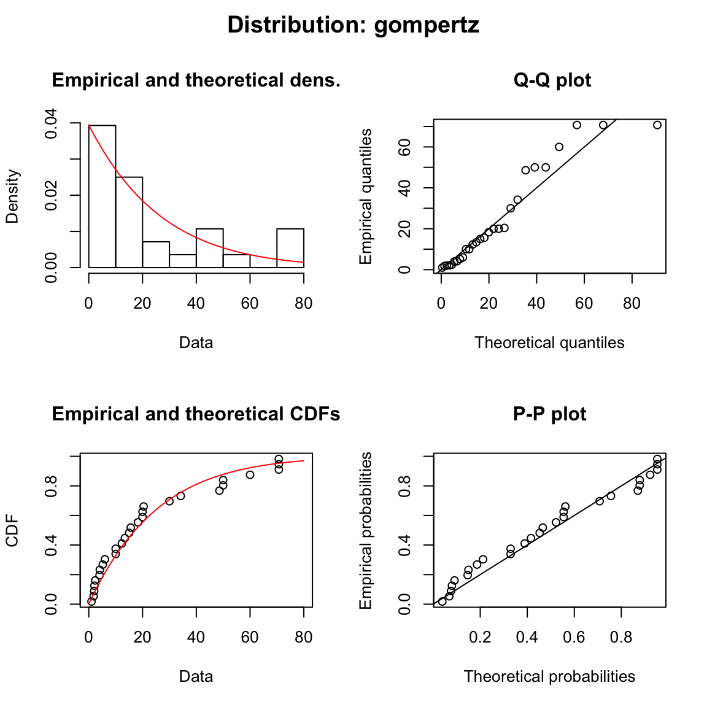
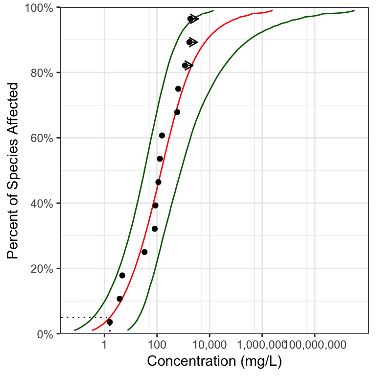

ssdtools User Manual
Joe Thorley
2018-11-25
Source:vignettes/ssdtools-manual.Rmd
ssdtools-manual.RmdIntroduction
ssdtools is an R package to fit Species Sensitivity Distributions (SSDs) using Maximum Likelihood and model averaging.
SSDs are cumulative probability distributions that are used to estimate the percent of species that are affected by a given concentration of a chemical. The concentration that affects 5% of the species is referred to as the 5% Hazard Concentration (HC). For more information on SSDs the reader is referred to Posthuma, Suter II, and Traas (2001).
In order to use ssdtools you need to install R (see below) or use the Shiny app. The shiny app includes a user guide. This vignette is a user manual for the R package.
Philosophy
ssdtools provides the key functionality required to fit SSDs using Maximum Likelihood and model averaging in R. It is intended to be used in conjunction with tidyverse packages such as readr to input data, tidyr and dplyr to group and manipulate data and ggplot2 to plot data. As such it endeavours fulfill the tidyverse manifesto.
Installing
In order to install R (R Core Team 2018) the appropriate binary for the users operating system should be downloaded from CRAN and then installed.
Once R is installed, the ssdtools package can be installed (together with the tidyverse) by executing the following code at the R console
The ssdtools package (and key tidyverse packages) can then be loaded into the current session using
library(ssdtools)
library(readr)
library(ggplot2)
library(tidyr)
library(dplyr)
#>
#> Attaching package: 'dplyr'
#> The following objects are masked from 'package:stats':
#>
#> filter, lag
#> The following objects are masked from 'package:base':
#>
#> intersect, setdiff, setequal, union
library(purrr)Getting Help
To get additional information on a particular function just type ? followed by the name of the function at the R console. For example ?ssd_gof brings up the R documentation for the ssdtools goodness of fit function.
For more information on using R the reader is referred to R for Data Science (Wickham and Grolemund 2016).
If you discover a bug in ssdtools please file an issue with a reprex (repeatable example) at https://github.com/bcgov/ssdtools/issues.
Inputting Data
Once the ssdtools package has been loaded the next task is to input some data. An easy way to do this is to save the concentration data for a single chemical as a column called Conc in a comma separated file (.csv). Each row should be the sensitivity concentration for a separate species. If species and/or group information is available then this can be saved as Species and Group columns. The .csv file can then be read into R using
For the purposes of this manual we use the CCME dataset for boron which is provided with the ssdtools package
data <- ssdtools::boron_data
print(data)
#> # A tibble: 28 x 5
#> Chemical Species Conc Group Units
#> <chr> <chr> <dbl> <fct> <chr>
#> 1 Boron Oncorhynchus mykiss 2.1 Fish mg/L
#> 2 Boron Ictalurus punctatus 2.4 Fish mg/L
#> 3 Boron Micropterus salmoides 4.1 Fish mg/L
#> 4 Boron Brachydanio rerio 10 Fish mg/L
#> 5 Boron Carassius auratus 15.6 Fish mg/L
#> 6 Boron Pimephales promelas 18.3 Fish mg/L
#> 7 Boron Daphnia magna 6 Invertebrate mg/L
#> 8 Boron Opercularia bimarginata 10 Invertebrate mg/L
#> 9 Boron Ceriodaphnia dubia 13.4 Invertebrate mg/L
#> 10 Boron Entosiphon sulcatum 15 Invertebrate mg/L
#> # ... with 18 more rowsFitting Distributions
The function ssd_fit_dists() inputs a data frame and fits one or more distributions. The user can specify a subset of the
-
log-normal (
lnorm), -
log-logistic (
llog), -
log-Gumbel (
lgumbel), -
Gompertz (
gompertz), -
gamma (
gamma) and -
Weibull (
weibull)
distributions and/or include the
-
Pareto (
pareto)
distribution using the dists argument.
The coefficients can be extracted using the coef function. However, in and off themselves the coefficients are not that helpful.
coef(dists)
#> $lnorm
#> meanlog sdlog
#> 2.561645 1.241540
#>
#> $gompertz
#> shape scale
#> 0.039412405 0.002597986It is generally much more informative to plot the fits using the autoplot generic function. As autoplot returns a ggplot object it can be modified prior to plotting (printing) to make it look prettier.
Selecting One Distribution
Given multiple distributions the user is faced with choosing the best fitting distribution (or as discussed below averaging the results weighted by the fit).
For illustrative purposes we consider the same six distributions as Schwarz and Tillmans (2017).
boron_dists <- ssd_fit_dists(boron_data)
ssd_gof(boron_dists)
#> # A tibble: 6 x 9
#> dist ad ks cvm aic aicc bic delta weight
#> * <chr> <dbl> <dbl> <dbl> <dbl> <dbl> <dbl> <dbl> <dbl>
#> 1 lnorm 0.507 0.107 0.0703 239. 240. 242. 1.42 0.133
#> 2 llog 0.487 0.0993 0.0595 241. 241. 244. 3.40 0.049
#> 3 gompertz 0.602 0.120 0.0822 238. 238. 240. 0 0.271
#> 4 lgumbel 0.829 0.158 0.134 244. 245. 247. 6.58 0.01
#> 5 gamma 0.441 0.117 0.0555 238. 238. 240. 0.019 0.268
#> 6 weibull 0.435 0.117 0.0543 238. 238. 240. 0.014 0.269The ssd_gof() function returns several goodness of fit measures that can be used to select the best distribution including three statistics
-
Anderson-Darling (
ad) statistic, -
Kolmogorov-Smirnov (
ks) statistic and -
Cramer-von Mises (
cvm) statistic
and three information criteria
- Akaike’s Information Criterion (
aic), - Akaike’s Information Criterion corrected for sample size (
aicc) and - Bayesian Information Criterion (
bic)
Following Burnham and Anderson (2002) we recommend the aicc for model selection. The best fitting model is that with the lowest aicc (indicated by the model with a delta value of 0.000 in the goodness of fit table). In the current example the best fitting model is the Gompertz distribution.
For further information on the advantages of an information theoretic approach in the context of selecting SSDs the reader is referred to Schwarz and Tillmans (2017).
Averaging Multiple Distributions
Often other distributions will fit the data almost as well as the best distribution as evidenced by delta values < 2. In this situation the recommended approach is to estimate the average fit based on the relative weights of the distributions (Burnham and Anderson 2002). The aicc based weights are indicated by the weight column in the goodness of fit table. In the current example, the gamma, Weibull and log-normal distributions have delta values < 2.
Estimating the Fit
The predict function can be used to generate estimates model-averaged (or if average = FALSE individual) estimates. By default model averaging is based on aicc.
The resultant object is a data frame of the estimated concentration (est) with standard error (se) and lower (lcl) and upper (ucl) 95% confidence limits by percent of species affected (percent). The uncertainty in the estimates is generated using parametric bootstrapping.
boron_pred
#> # A tibble: 99 x 5
#> percent est se lcl ucl
#> * <int> <dbl> <dbl> <dbl> <dbl>
#> 1 1 0.304 0.332 0.124 1.04
#> 2 2 0.544 0.453 0.236 1.63
#> 3 3 0.780 0.553 0.352 2.16
#> 4 4 1.01 0.643 0.473 2.66
#> 5 5 1.25 0.726 0.595 3.15
#> 6 6 1.49 0.805 0.724 3.60
#> 7 7 1.73 0.881 0.858 4.03
#> 8 8 1.97 0.955 0.996 4.49
#> 9 9 2.21 1.03 1.14 4.92
#> 10 10 2.46 1.10 1.29 5.35
#> # ... with 89 more rowsThe data frame of the estimates can then be plotted together with the original data using the ssd_plot() function to summarize an analysis. Once again the returned object is a ggplot object which can be customized prior to plotting.
gp <- ssd_plot(boron_data, boron_pred, color = "Group", label = "Species",
xlab = "Concentration (mg/L)", ribbon = TRUE)
gp <- gp + expand_limits(x = 5000) + # to ensure the species labels fit
scale_color_manual(values = c("Amphibian" = "Black", "Fish" = "Blue",
"Invertebrate" = "Red", "Plant" = "Brown")) +
ggtitle("Species Sensitivity for Boron")
print(gp)
In the above plot the model-averaged 95% confidence interval is indicated by the shaded band and the model-averaged 5% Hazard Concentration (\(HC_5\)) by the dotted line. Hazard concentrations are discussed below.
Hazard Concentrations
The 5% hazard concentration (\(HC_5\)) is the concentration that affects 5% of the species tested. It can be obtained by selecting the estimated prediction with a percent value of 5.
boron_pred[boron_pred$percent == 5,]
#> # A tibble: 1 x 5
#> percent est se lcl ucl
#> <int> <dbl> <dbl> <dbl> <dbl>
#> 1 5 1.25 0.726 0.595 3.15By default the uncertainty in the predicted estimates is generated from 1,000 bootstrap iterations. However in the case of a specific hazard concentration we recommend the use of 10,000 bootstrap iterations to ensure repeatability. Rather than regenerate all the predicted estimates with 10,000 iterations which may be prohibitively time-consuming we recommend the use of ssd_hc() to generate the single estimate of interest with 10,000 iterations.
The code may still take upwards of several minutes to run.
Plotting
The sscda package provides three ggplot geoms to allow you construct your own plots.
The first is geom_ssd() which plots species sensitivity data

The second is geom_xribbon() which plots species sensitivity confidence intervals

And the third is geom_hcintersect() which plots hazard concentrations

They can be combined together as follows
gp <- ggplot(boron_pred, aes_string(x = "est")) +
geom_xribbon(aes_string(xmin = "lcl", xmax = "ucl", y = "percent/100"), alpha = 0.2) +
geom_line(aes_string(y = "percent/100")) +
geom_ssd(data = boron_data, aes_string(x = "Conc")) +
scale_y_continuous("Species Affected (%)", labels = scales::percent) +
expand_limits(y = c(0, 1)) +
xlab("Concentration (mg/L)")
print(gp + geom_hcintersect(xintercept = boron_hc5$est, yintercept = 5/100))
To log the x-axis add the following code.
gp <- gp + coord_trans(x = "log10") +
scale_x_continuous(breaks = scales::trans_breaks("log10", function(x) 10^x),
labels = comma_signif)
print(gp + geom_hcintersect(xintercept = boron_hc5$est, yintercept = 5/100))
The most recent plot can be saved as a file using ggsave(), which also allows the user to set the resolution.
Grouping
A common question is how do I fit distributions to multiple groups such taxa and/or chemicals? An elegant approach using the tidyverse is demonstrated below.
boron_datas <- nest(boron_data, -Group)
boron_datas <- mutate(boron_datas,
Fit = map(data, ssd_fit_dists, dists = "lnorm"),
Prediction = map(Fit, predict))
boron_datas <- unnest(boron_datas, Prediction)The resultant data and predictions can then be plotted as follows.
boron_hc5s <- filter(boron_datas, percent == 5)
gp %+% boron_datas +
facet_wrap(~Group) +
geom_hcintersect(data = boron_hc5s, aes(xintercept = est, yintercept = percent/100))
Additional Features
Cullen Frey Plots
The data can be visualized using a cullen frey plot of the skewness and kurtosis.

Model Diagnostics
A fitdists object can be plotted to display model diagnostics plots for each fit.

Weighted Data
The ssd_fit_dists() function allows the user to name a column that specifies the weights to use in the estimation. However, to date very little functionality has been implemented for weighted fits in the fitdistrplus package.
boron_data$Weight <- as.integer(boron_data$Group)
fit <- ssd_fit_dists(boron_data, weight = "Weight", dists = c("lnorm", "weibull"))
#> Warning in mledist(data, distname, start = arg_startfix$start.arg, fix.arg
#> = arg_startfix$fix.arg, : weights are not taken into account in the default
#> initial values
#> Warning in mledist(data, distname, start = arg_startfix$start.arg, fix.arg
#> = arg_startfix$fix.arg, : weights are not taken into account in the default
#> initial values
fit
#> Fitting of the distribution ' lnorm ' by maximum likelihood
#> Parameters:
#> estimate Std. Error
#> meanlog 2.352547 0.1414815
#> sdlog 1.233407 0.1000467
#> Fitting of the distribution ' weibull ' by maximum likelihood
#> Parameters:
#> estimate Std. Error
#> shape 0.9458077 0.08532335
#> scale 19.1184792 2.44996931
plot(fit)
#> Error in plot.fitdist(x, breaks = breaks, ...): The plot of the fit is not yet available when using weightsCensored Data
Censored data is that for which only a lower and/or upper limit is known for a particular species. If the right argument in ssd_fit_dists() is different to the left argument then the data are considered to be censored. fluazinam is a censored data set from the fitdistrplus package.
data(fluazinam, package = "fitdistrplus")
head(fluazinam)
#> left right
#> 1 3.8 3.8
#> 2 33.6 33.6
#> 3 87.0 87.0
#> 4 1700.0 NA
#> 5 640.0 640.0
#> 6 1155.0 NAThere are less goodness-of-fit statistics available for fits to censored data (currently just aic and bic).
fluazinam_dists <- ssd_fit_dists(fluazinam, left = "left", right = "right")
#> Warning: gompertz failed to fit: Error in if (one.more) { : missing value where TRUE/FALSE needed
ssd_gof(fluazinam_dists)
#> Warning: Unknown or uninitialised column: 'aicc'.
#> # A tibble: 5 x 5
#> dist aic bic delta weight
#> * <chr> <dbl> <dbl> <dbl> <dbl>
#> 1 lnorm 150. 151. 0.269 0.274
#> 2 llog 150. 151. 0.552 0.237
#> 3 lgumbel 149. 151. 0 0.313
#> 4 gamma 153. 154. 3.45 0.056
#> 5 weibull 151. 153. 1.92 0.12But model-averaged predictions can be made using aic
and the results plotted complete with arrows indicating the censorship.
ssd_plot(fluazinam, fluazinam_pred,
left = "left", right = "right",
xlab = "Concentration (mg/L)")
#> Warning: Removed 98 rows containing missing values (geom_path).
#> geom_path: Each group consists of only one observation. Do you need to
#> adjust the group aesthetic?
References
Burnham, Kenneth P., and David R. Anderson, eds. 2002. Model Selection and Multimodel Inference. New York, NY: Springer New York. https://doi.org/10.1007/b97636.
Posthuma, Leo, Suter IIGlenn W, and Theo P Traas. 2001. Species Sensitivity Distributions in Ecotoxicology. CRC press. https://www.crcpress.com/Species-Sensitivity-Distributions-in-Ecotoxicology/Posthuma-II-Traas/p/book/9781566705783.
R Core Team. 2018. R: A Language and Environment for Statistical Computing. Vienna, Austria: R Foundation for Statistical Computing. https://www.R-project.org/.
Schwarz, Carl J., and Angeline R. Tillmans. 2017. “A Comparison of Statistical Methods for Modeling Species Sensitivity Distributions (DRAFT).”
Wickham, Hadley, and Garrett Grolemund. 2016. R for Data Science: Import, Tidy, Transform, Visualize, and Model Data. First edition. Sebastopol, CA: O’Reilly. https://r4ds.had.co.nz.